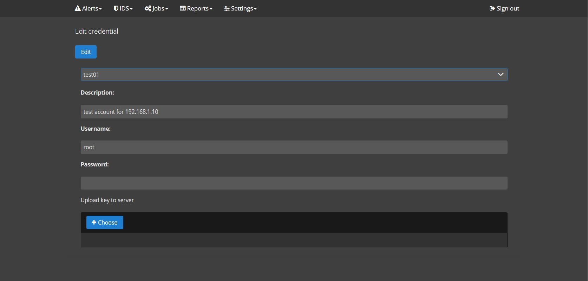

In this article will be considered integration between Suricata IDS and Cuckoo sandbox.
The Alertflex open-source project can integrate the Suricata NIDS and several types of Malware Analysis Sandboxes ( Cuckoo, Falco, VMRay) in one solution to allow you to automatically check files extracted by Suricata IDS in Sandbox. Alertflex periodically accesses to files via SFTP protocol and loaded them into Sandbox according to predefined parameters/filters. In case, sandbox determinates suspicious file, Alertflex raises an alert.
Objective
Describer process of configuration Alertflex and to be sure that Alertflex sends file extracted by Suricata IDS to Cuckoo sandbox, creates an internal sandbox task, and periodically checks the status of an analyzed file in the cloud sandbox. If the file is determined as suspicious or malicious, alert with severity 2 (major) or 3 (critical) in Alertflex web console should be raised.
Pre-Conditions
Note: Alertflex solution is provided under Apache-2.0 License and AGPL-3.0 License, please read these licenses before starting to work with Alertflex.
You need computers/VM with installed Suricata IDS, Cuckoo sandbox and Alertflex management console. Possibility mirroring of network traffic to Suricata via a switch or other devices and two sample EXE files normal and suspicious. Below present a network diagram of use case:
Setup Suricata IDS
1) Create file local.rules with Suricata IDS rules for extraction from network traffic files with extension EXE (see examples of rules below)
alert http any any -> any any (msg:"FILE exe detected"; filemagic:"executable for MS Windows"; filestore; sid:3; rev:1;)
alert http any any -> any any (msg:"FILE EXE file claimed"; fileext:"exe"; filestore; sid:4; rev:1;)
2) Check parameters in the config file of Suricata /etc/suricata/suricata.yaml according to values listed below
outputs:
- files:
force-magic: yes # force logging magic on all logged files
# force logging of checksums, available hash functions are md5,
# sha1 and sha256
force-hash: [md5,sha256]
- file-store:
version: 2
enabled: yes
dir: files
write-fileinfo: yes
stream-depth: 0
max-open-files: 1000
default-rule-path: /var/lib/suricata/rules
rule-files:
- suricata.rules
- local.rules
Setup an Alertflex management console
1) Open panel /settings/integrations of Alertflex management console and configure Cuckoo sandbox.
2) Open panel /settings/credentials/add of Alerflex management console and configure credential account for SSH access to Suricata IDS host.
3) Open panel /settings/host/add of Alertflex management console and configure host account for SSH access to Suricata IDS host.

4) Open panel /jobs/sandbox/add of Alertflex management console and configure sandbox job for Suricata host
Note: parameter Time period is given in seconds for periodically check Suricata extracted files folder
Performing integration test
1) Transmit a file via HTTP protocol inside of the network segment that is monitored by Suricata. Check that Suricata extracts the file to folder /var/log/suricata/files. There is should be two files - extracted file itself and Suricata notification file with info about the transmitted file.
cd /var/log/suricata/files
find ./ -name "*"
./41
./41/4156606e2e003b2a3b3a4998b26c218af8ef30731ee4f5390419bc5b3b0e8acf
./41/4156606e2e003b2a3b3a4998b26c218af8ef30731ee4f5390419bc5b3b0e8acf.1596924012.1.json
./86
cat ./41/4156606e2e003b2a3b3a4998b26c218af8ef30731ee4f5390419bc5b3b0e8acf.1596924012.1.json
{
"timestamp":"2020-08-09T01:00:12.448191+0300",
"http":{
"url":"/putty.exe",
"hostname":"192.168.1.10",
"protocol":"HTTP/1.1",
"http_user_agent":"Mozilla/5.0 (Windows NT 6.1; Win64; x64) AppleWebKit/537.36 (KHTML, like Gecko) Chrome/84.0.4147.105 Safari/537.36",
"http_refer":"http://192.168.1.10/",
"http_content_type":"application/x-msdos-program",
"length":1173000,
"http_method":"GET",
"status":200
},
"src_ip":"192.168.1.10",
"proto":"TCP",
"dest_port":56952,
"event_type":"fileinfo",
"app_proto":"http",
"flow_id":2024944479702839,
"dest_ip":"192.168.1.2",
"in_iface":"eth0",
"src_port":80,
"fileinfo":{
"gaps":false,
"filename":"/putty.exe",
"state":"CLOSED",
"sid":[
4
],
"magic":"PE32+ executable (GUI) x86-64, for MS Windows",
"md5":"7e13b2d92d7490b8b3a1f10edfe2f410",
"sha256":"4156606e2e003b2a3b3a4998b26c218af8ef30731ee4f5390419bc5b3b0e8acf",
"stored":true,
"size":1173000,
"tx_id":4
}
}
2) After expiration of Time period defined in sandbox job, please check the folder /var/log/suricata/files to be sure that the above files were sent to the sandbox and deleted in this folder by Alertflex management console.
cd /var/log/suricata/files
find ./ -name "*"
./41
./86
3) Open panel of Cuckoo Web UI and check status of sandbox task.
4) Open panel /jobs/reports/sandbox of Alertflex management console and check status of sandbox task.
5) If the status of the task is reported please check the alert dashboard of Alertflex console, there is an alert about file analysis must be present.